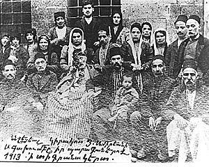

Family and Home
The fact that the man at the bottom center is dead in this picture is only one of the fascinating insights a photograph like this offers about the Armenian family.

Can you tell me more about the Armenian families and homes that you know?
You can develop one of the following themes or come up with a project of your own.
A What do your extended family maps look like? Where did you, your parents, grandparents, uncles, cousins, and so on, come from, and where did they end up? Use a map to illustrate the geographical movements and distribution of your families.
B What interesting things are hidden in some family trees? Can you compile and compare your family trees and see which ones reveal some surprise? Use a diagram of family relations to find out more about the peculiarities of some Armenian families.
C Is it possible to guess that you are Armenian just by looking inside your home? Does the house where you live have objects or elements that are particularly Armenian? Are there things that go on in your home that would help one guess your origin and identity? Analyze your homes as a source of clues about your identity.
(Click on the Acquaintance icon to go back)